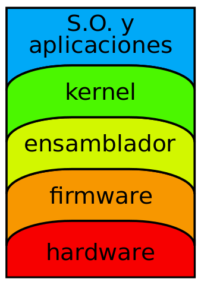
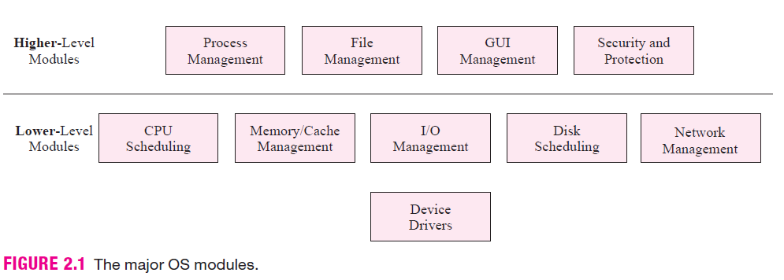
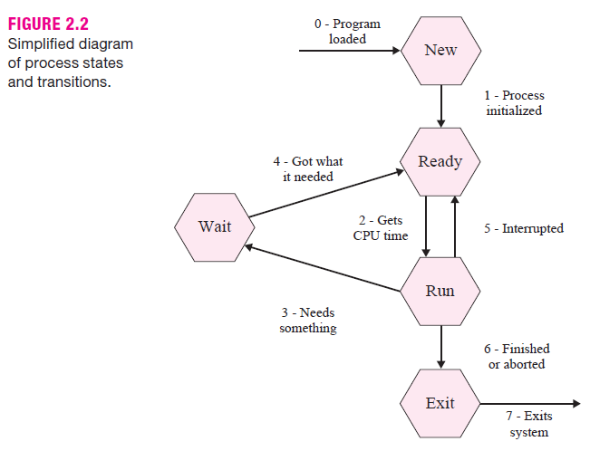
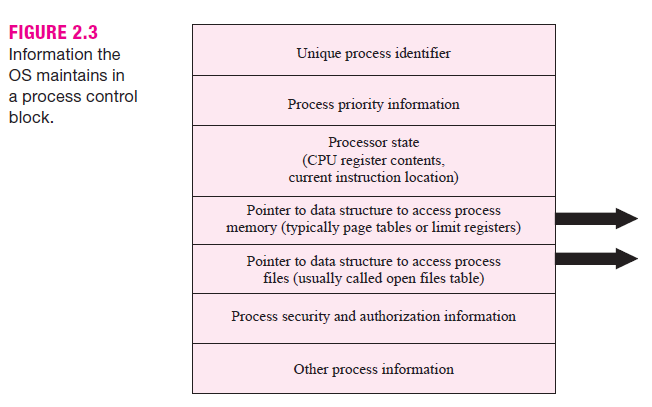
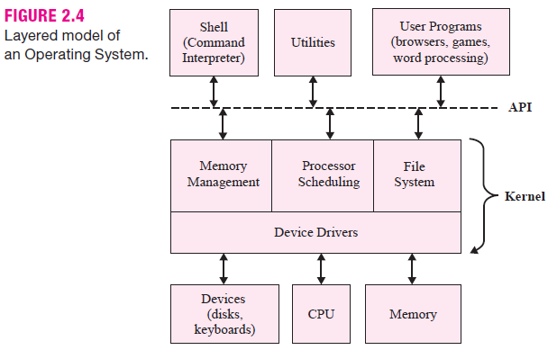
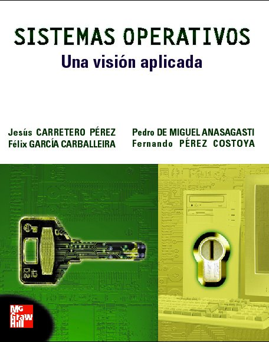

Introducción a los Sistemas Operativos
Sistemas Operativos - UTN FRCU
Ciclo Lectivo 2016
¿Qué es un Sistema Operativo?
Vistas del Sistema Operativo

Vista del Usuario
Cómo los usuarios o los programas ven
o interactúan con los recursos.
Vista del Sistema
Cómo el Sistema Operativo interactúa
con el hardware.
Tipos de Usuarios
- Usuarios Finales
- Programadores de Aplicaciones
- Programadores de Sistemas
- Administradores de Sistemas
Vista del Sistema
Ejemplo: Copiar de CD a disco...
- Comprobar que el archivo esté en el CD.
- Ver si el archivo existe en el disco rígido.
- Crear el nombre de archivo en el directorio.
- Buscar espacio en el disco para el archivo.
- Leer los sectores de datos del CD.
- Escribir los sectores de datos en el disco.
- Actualizar la entrada de directorio en el disco.
- Actualizar la info de espacio del disco.
Ejecutar todo esto en segundos (o menos) !!!
¿Qué hace un Sistema Operativo?
Proporcionar una interfaz de alto nivel del hardware al usuario y a los programas.
Administrar los recursos físicos y lógicos de la computadora.
Recursos Gestionados por el S.O.
- Procesador
- Memoria Principal y Cachés
- Dispositivos de E/S
- Almacenamiento Secundario
- Sistemas de Archivos
- Interfaces de Usuario
- Acceso a Redes
- Suministro de Protección y Seguridad
Componentes de un Sistema Operativo.

Concepto de Proceso
Un Proceso, es un programa que está corriendo o en ejecución. (?)
Estados de un Proceso

Información del Proceso

Tipos de Sistemas Operativos
- S.O. Monotarea y Monousuario
- S.O. Multitarea y Monousuario
- S.O. de Tiempo Compartido
- S.O. de Red y S.O. Distribuidos
- S.O. de Tiempo Real
- S.O. para Dispositivos Móviles
Enfoques Arquitectónicos para Constriuir un S.O.
- Enfoque con Núcleo Único y Monolítico
- Enfoque de Micronúcleo (microkernel)
- Enfoque por Capas
- Enfoque Cliente-Servidor
Enfoque Monolítico vs. Micronúcleo

Arquitectura en Capas

Arquitectura de Micronúcleo

Bibliografía
- Elmasri - S.O.: Un enfoque en espiral. (Cap. 1 y 2)
- Carretero - S.O.: Una visión Aplicada. (Cap. 2)

Gracias!
http://aretche.github.io/slides-so/01/
Esta obra de Gabriel Arellano está bajo una licencia Creative Commons Atribución-CompartirIgual 4.0 Internacional.